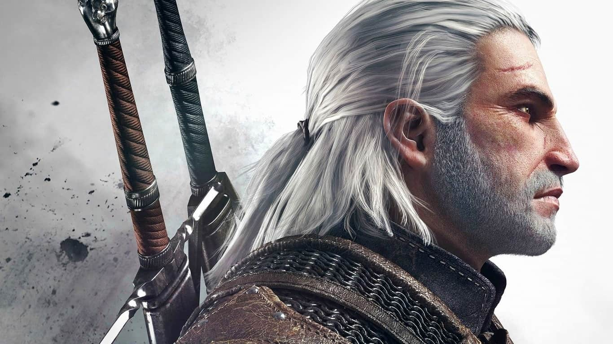

The Witcher, saga de videojuegos
Juegos basados en la saga de Geralt de Rivia, uno de los pocos brujos que quedan, asesinos de monstruos a sueldo con habilidades especiales. Los videojuegos cuentan las aventuras de Geralt a través de misiones que el jugador debe completar.
Andrzej Sapkowski vendió los derechos de la saga de Geralt de Rivia a CD Projekt en 2007 por la cantidad de 9.500 dólares. Ese mismo año The Witcher fue estrenado para Microsoft Windows. Cuatro años después, en 2011, fue estrenado The Witcher: Assassins of Kings para la consola Xbox 360, Microsoft Windows, OS X y GNU/Linux. Estos dos juegos gozaron de relativa popularidad entre los jugadores de RPG de fantasía medieval. Pero fue en 2015 cuando la tercera entrega de la saga posicionó a CD Projekt RED entre los mejores estudios de videojuegos con The Witcher 3: Wild Hunt. Este último videojuego ha vendido más de 10 millones de copias por todo el mundo, y fue ganador de más de 800 premios, incluido Juego del año en los Game Awards de 2015. Debido al rotundo éxito de The Witcher 3: Wild Hunt, Sapkowski demandó a CD Projekt RED por la suma de 16 millones de dólares alegando que los derechos vendidos en 2007 solamente contemplaban los primeros dos videojuegos y The Witcher 3: Wild Hunt, aunque en el pasado Sapkowski admitió que se le fue ofrecido un porcentaje extra por parte de CD Projekt RED que él mismo rechazó.